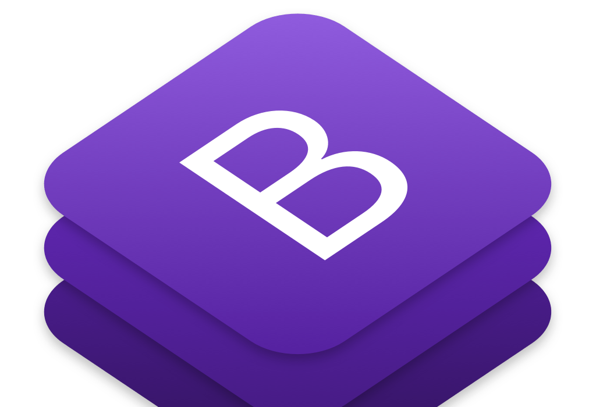

Este site foi desenvolvido com base de auxiliar vocês com algumas dicas de computadores e também mostrarmos nosso conhecimento adquirido durante o período de ensino do curso, para o resultado deste site na parte de programação tivemos 3 professores sendo eles por ordem de chegada, Vitor Ikoma, Amanda da Cunha e Jefferson Pedro, também tivemos conselhos de uma programadora, Kemely Cardozo que trabalha na empresa Itau, na função de frontEnd.
Para o desenvolvimento deste site utilizamos 3 linguagens de programação, HTML, CSS e Java Script.

É uma linguagem de marcação padrão para páginas da web, ou seja, para se desenvolver páginas da web atualmente é a linguagem padrão, com ele você pode criar seu próprio site, também pode se criar blog, aplicações, sistemas, plataformas, jogos, entre diversas outras ideias através dessa linguagem. HTML significa Hyper Text Markup Language, traduzindo do inglês (Linguagem de Marcação de Hipertexto), ele descreve a estrutura de uma página da web. Os elementos HTML informam ao navegador como exibir o conteúdo, ou seja, o navegador por exemplo do Google Chrome nós temos a internet Explore, Safari, Opera, temos vários navegadores e todos eles interpretam a estrutura dessa linguagem para poder exibir o conteúdo.
Com o CSS você pode criar layouts muito mais poderosos, ele não é indispensável na criação de um site, mas certamente, um site feito apenas em HTML não seria nada atrativo. O CSS possui capacidades incríveis de estilização, é possível desenvolver um site extremamente elegante, bem otimizado e com interação. Foi desenvolvido pelo W3C em 1996. Enquanto o HTML é uma linguagem de marcação (parte estrutural de um site, igual explicado no texto anterior), o CSS é focado no estilo (a parte estética de um site), eles se complementam, com ele você pode modificar praticamente tudo dentro do seu layout, como as cores, características de fontes, margens, posicionamento imagens de fundo, enfim, são várias possibilidades.
JavaScript é uma das linguagens de programação mais populares e usadas no mundo todo. É possível construir páginas dinâmicas. Está linguagem de programação já é de alto-nível, criada em 1996 pelo programador Brendan Eich que também foi um dos fundadores da Mozilla. Embora essa linguagem tenha esse nome, vamos deixar claro que JavaScript não é Java. Ela é usada para desenvolver aplicações, sistemas e serviços de alta complexidade. Com ela, você pode criar páginas dinâmicas, animações, gráficos, mapas interativos, aplicativos para dispositivos moveis e até games. Atua como um complemento as linguagens HTML e CSS. Como funciona um site desenvolvido com essas três linguagens? O HTML é quem define a estrutura de uma página, o CSS do estilo e cores a essa página, e o JavaScript é quem controla o comportamento da página, como animações, controle de mídias, funções dinâmicas etc.
BootStrap é um framework front-end que veio para facilitar e agilizar o trabalho do desenvolvedor, oferecendo padrões e templates baseados em HTML e CSS para várias funções e componentes. Ele permite também que a interface de site seja otimizada para qualquer tamanho de tela, desde os dispositivos móveis até as telas maiores. Foi desenvolvido por Jacob e Otto em meados de 2010, ambos engenheiros do Twitter. Naquela época, a ideia principal era padronizar as interfaces gráficas do site, para evitar diversa inconsistências. E a ideia deu tão certo que no ano seguinte eles lançaram o framework no GitHub como um software livre. As vantagens dele são ser totalmente gratuito, extremamente versátil, foca na responsividade. Um site responsivo para melhorar a experiência do usuário do usuário, com apenas algumas linhas de códigos são possíveis tornar o projeto responsivo se adaptando aos tamanhos de telas e layouts. Ele é formado por uma série de arquivos CSS e JavaScript que são responsáveis por atribuir características especificas aos elementos da página.
As fontes utilizadas neste site se chama Poppins, essa fonte entre outras é disponível gratuitamente no Google Fonts, bastando apenas você utilizar o link com a url da fonte que o google disponibiliza e colocar no seu aplicativo de programação.